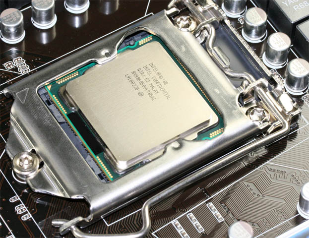

⠀
⠀
⠀
Primera Generación 1971-1979: Comienza con el procesador 4004 siendo el primer microprocesador en un chip, seguido de los siguientes procesadores, 8008, 8080, 6800, 8088; Con simplemente buses de datos de 4, 8 y 16 bits.⠀
Segunda Generación 1980-1989: Comienza con el procesador Intel 80286, Motorola 68020, Intel 80386 y Intel 80486. Esta Generación trajo como novedad la capacidad de hacer multitareas, los buses de datos que ahora eran de 16 y 32 bits, y el añadido de unos sistemas operativos algo complejos.⠀
Tercera Generación 1990-1996: Comienza con el procesador AMD AMX86, Power PC601, Intel Pentium, Power PC620, Intel Premium pro, AMD K5, AMD K6, AMD K6-2. Sus unicas novedades fueron la capacidad de sus transistores, la capacidad del bus de datos aumentada a 64 Bits y la velocidad de procesamiento las cuales aumentaron.⠀
Cuarta Generación 1997-2000: Comienza con el procesador Intel Pentium 2, Intel Pentium 2 Xeon, Intel Celeron, AMD Athlon K7, Intel Premium 3, Intel Premium 3 Xeon y el Intel Premium 4 de nuevo con una mayor capacidad de transistores, el uso exclusivo de buses de datos de 32 y 64 bits y aumento en su velociad de procesamiento.⠀
Quinta Generación 2001-2009: Comienza con el procesador AMD ATHLON XP, INTEL PENTIUM 4 PRESCOTT, AMD ATHLON 64, INTEL CORE DUO, y AMD PHENOM; Ademas añadio Controladores de memoria en el circuito integrado del procesador, mejoras a su arquitectura y se usaron multiples nucleos, ademas aumento aun mas su capacidad de transistores y velocidad de procesamiento.⠀
Sexta Generación 2010-Continuando: Procesadores AMD, Intel y RYZEN mejorando continuamente los procesadores que sacan al mercado, añadiendole multiples nucleos llegando a 8 nucleos, Nuevas capacidades de recibir instrucciones.